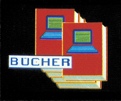
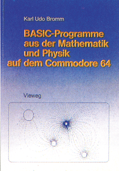
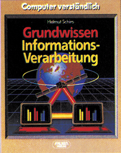
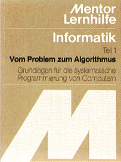
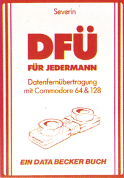

Bücher

Der Autor hat in diesem 171 Seiten umfassenden Buch 57 Programme aus dem mathematisch-naturwissenschaftlichen Schulunterricht zusammengestellt. Das Buchistinzehn Kapitel unterteilt, wobei das erste Kapitel eine Einführung in die verwendeten Programmiertricks des Autors ist. Es wird unter anderem ein Grafikprogramm in Maschinensprache zur Verfügung gestellt. Die nachfolgenden acht Kapitel befassen sich mit Problemstellungen aus Mathematik und Physik. Sie enthalten unter anderem: Simulationen aus der Physik, Auswertungen von Meßreihen, Programme aus der Zahlentheorie, Zufall und Wahrscheinlichkeit, Approximationsverfahren, Differential- und Integralrechnungen, lineare Algebra und analytische Geometrie. Der Autor erläutert auch den Hintergrund der Programme, sowohl rein mathematisch als auch in der Anwendung. Die Programme sind bis auf vier Stück relativ kurz gehalten. Nur eine Meßreihenauswertung, eine Kurvendiskussion für Funktionen dritten und vierten Grades und zwei Programme aus der linearen Algebra und der analytischen Geometrie sind etwas länger und natürlich auch komfortabler. Aber auch diese Programme sind nicht länger als sechs Buchseiten, während die übrigen Programme sich meistens um eine Buchseite bewegen, und entsprechend schnell eingegeben werden können. Man kann natürlich auch auf die lieferbare Programmdiskette zurückgreifen, die aber mit 48 Mark etwas überteuert scheint. Besonderen Wert legte Bromm auf Dokumentation und Übersichtlichkeit seiner Programme. Zu jedem Programm ist eine genaue Erörterung des Problemhintergrundes vorhanden, indem genau auf das Programm eingegangen wird. Anhand dieser und einiger Hardcopies aus den Programmen werden die Möglichkeiten der Programme gezeigt. Dadurch ist der Leser des Buches schnell in der Lage, die Programme an seine Bedürfnisse anzupassen und entsprechend abzuändern.

Fazit: Das Buch ist eine gelungene Sammlung aus Programmen für Mathematik und Physik, nicht nur für Schüler, sondern auch für diejenigen, die sich dafür interessieren, wie man mathematische oder physikalische Probleme auf dem Computer umsetzt.
(Jörg Sahlmann/bj)Info: Karl Udo Bromm, Basic-Programme aus der Mathematik und Physik auf dem Commodore 64, Vieweg-Verlag, ISBN 3-528-04428-4, 171 Seiten, Preis: 39,59 Mark
Grundwissen Informationsverarbeitung
Mit Ratgebern und nützlichen Büchern für die kleinen, aber manchmal auch großen Probleme des Alltags ist der Falken-Verlag eine gute Adresse geworden. Kein Wunder, daß seit einiger Zeit Software und Computerbücher erschienen sind. Aus der Reihe »Computer verständlich« verdient das neueste Werk aus mehreren Gründen Beachtung.

Was bietet das »Grundwissen« zur Informationsverarbeitung?
Vor allem ist dieses Buch von einem Profi geschrieben, der als Systemanalytiker und Chefberater des größten Computerherstellers der Welt die Thematik wirklich überschaut.
Dies macht sich bemerkbar in der Verständlichkeit genauso wie in der Überschaubarkeit, die den Leser auf angenehme Weise in die Informationsverarbeitung einführt.
Zahlreiche Fotos und Abbildungen unterstützen das Textverständnis und erleichtern die Behandlung komplexer Fragen wie Datenbanken, Umwandlung von Zahlensystemen bis hin zu Ausblicken auf die Zukunft.
Während sich das zuvor besprochene Werk eher für Schüler anbietet, so ist der hier genannte Band von Helmut Schiro für Informatik-Studenten und Entscheidungsträger in Schule und Wirtschaft gedacht.
(R. Werner/bj)Info: Helmut Schiro, Grundwissen Informations-Verarbeitung, Falken-Verlag, 311 Seiten, ISBN 3-8068-4314-7, Preis: 58 Mark
Vom Problem zum Algorithmus
Lern- und Studienhilfen aus dem Mentor-Verlag sind seit vielen Jahren für nahezu alle Fachgebiete erhältlich. Weil in den meisten Lehrplänen der Bundesländer das Thema »Vom Problem über den Algorithmus zum Programm« einen sehr umfangreichen Platz einnimmt, hat der Verlag die Reihe »INFORMATIK« aufgelegt, dessen erster Band soeben erschienen ist. Was bietet der erste Band? — Zunächst werden die Grundlagen für die systematische Programmierung von Computern geliefert,

— im Mittelpunkt steht hierbei die Umwandlung des gestellten Problems zum Algorithmus anhand teilweise amüsanter Beispiele wie Kochrezepte oder Wassereinleitung in ein Schwimmbad.
Die einzelnen Lernschritte wie Problemanalyse, Strukturelemente, Sequenz, Iteration und Umsetzung werden verständlich dargeboten und gründlich trainiert.
In Verbindung mit einer Begleitdiskette, die sämtliche Problemlösungen als fertige Pascal-Programme enthält, dürfte der Schüler in der Lage sein, sein Wissen auf jede beliebige Programmiersprache anzuwenden.
(R. Werner/bj)Info: Informatik Band 1, Vom Problem zum Algorithmus, Mentor-Verlag, 144 Seiten, ISBN 3-580-64750-4, Preis: 21,80 Mark, Preis der Begleitdiskette mit Pascal-Programmen: 49 Mark
DFÜ für jedermann
Wie der Titel verspricht, soll dieses Buch das Thema »Datenfernübertragung mit dem Commodore 64 und 128 so behandeln, daß auch ein Anfänger den Einstieg darin findet. Aus diesem Grund wurde dieses Buch von einem »DFU-Unerfahrenen« gelesen. Das Gebiet der Datenfernübertragung findet immer mehr Freunde, was vor allem auf die wachsenden Möglichkeiten in dieser Thematik zurückzuführen ist. Man benötigt aber außer der entsprechenden Hardware noch viele Informationen. Mit »DFÜ für jedermann« kann man sich das nötige Wissen aneignen und erwirbt außerdem ein leistungsfähiges Nachschlagewerk. Man kann diesem Buch einen hohen Aktualitätsgrad bescheinigen. Die folgenden Themen werden auf 331 Seiten besprochen: — DFÜ: erster Überblick — Übertragungsverfahren — Serielle Schnittstelle — Übertragungsprotokolle — Datex-P, Btx — Online-Datenbanken — Mailboxen — Hacker und Großrechner — Eigene Mailbox — RS232 am C 64/C 128 — Terminalprogramme — Telefonabhebeeinrichtung im Selbstbau — Wissenswertes zum Modem — Telefonnummern, Adressen

Tabellen
Während die ersten Kapitel noch Grundlagen vermitteln, wird der Leser bald in die Anwendung mit C 64 und C 128eingeführt. Erfreulich ist, daß nahezu alle Themenkreise angeschnitten werden; so findet man sogar juristische Hinweise, ein Mailboxprogramm und CP/M-spezifisches.
Das Buch hält, was es verspricht. Bereits der Anfänger kann aus diesem Buch größten Nutzen ziehen und wird es bestimmt nicht im Regal verstauben lassen, wenn er es gelesen hat.
(F. Müller/bj)Info: Rainer Severin, DFÜ für jedermann — Datenfernübertragung mit dem Commodore 64 & 128, Data Becker, 331 Seiten, ISBN 3-89011-141-8, Preis: 39 Mark